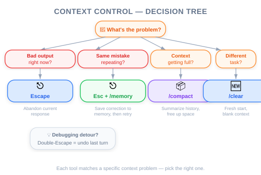

Figure: Context window as a finite resource — analogy.
Figure: Context window as a finite resource — analogy.

| Item | Details |
|---|---|
| Exam Coverage | D5 — Reliability & Performance (15%), D3 — Claude Code Configuration & Workflows (20%) |
| Task Statements | 5.1 ★★★ (context preservation), 5.4 ★★ (large codebase context), 3.5 ★★ (iterative refinement) |
| Course Source | claude-code-in-action / 03-context-and-commands / Lesson 10 |
Claude Code has a limited "working memory" (context window). Just like a meeting that goes too long, the conversation accumulates noise and Claude loses focus. Four tools manage this: Escape (interrupt), Double-Escape (rewind), /compact (summarize and continue), and /clear (fresh start). PMs need to understand this because context management directly affects developer productivity and AI output quality — which impacts sprint velocity and product timelines.
You do not need to manage context yourself, but you need to understand:
This knowledge helps you plan sprints, estimate effort, and communicate with engineering about AI-assisted development.
| Tool | Whiteboard Analogy | When to Use |
|---|---|---|
| Escape | "Wait, stop writing — let me clarify" | Someone is going the wrong direction |
| Double-Escape | Erase the last 3 items and restart from a good point | A tangent derailed the meeting |
/compact |
Take a photo of the whiteboard, erase it, paste the photo as a small reference | Whiteboard is full but insights are valuable |
/clear |
Wipe the board completely for a new topic | Switching to an entirely different meeting agenda |
💡 PM Decision Framework
Ask yourself: "Does the AI still need what it learned, or is it starting something unrelated?"
- Needs prior knowledge →/compact
- Clean slate is better →/clear
Your engineering team uses Claude Code daily. A senior engineer reports: "Claude works great for the first 20 minutes, then starts making weird mistakes." Here is what is happening and what you can recommend:
| Symptom | Root Cause | Recommendation |
|---|---|---|
| Claude repeats fixed bugs | Debugging noise filled the context window | Use /compact between subtasks |
| Claude forgets project conventions | Earlier instructions fell out of the context | Save conventions as memories or in CLAUDE.md |
| Claude modifies wrong files | Irrelevant context from a previous task | Use /clear when switching features |
| Claude's output quality degrades over time | Context window is saturated with low-signal content | Train team to use Escape + rewind proactively |
🎯 PM Takeaway
Context management is a developer skill that should be part of your team's AI onboarding. Teams that actively manage context report significantly better results from AI coding assistants.
When Claude is heading in the wrong direction, the developer presses Escape to stop it mid-output. This saves tokens and prevents bad output from polluting the context.
PM relevance: This is why "Claude went off on a tangent for 10 minutes" is a training issue, not a Claude issue. Developers should be interrupting early.
Pressing Escape twice lets the developer rewind the conversation to any previous message. Everything after that point is discarded.
PM relevance: This is the equivalent of "let's go back to what was working and try a different approach." It preserves useful context while removing the failed attempt.
/compact — "Summarize and Continue"Compresses the entire conversation into a summary. Claude retains what it learned but in condensed form.
PM relevance: This is the tool that enables long productive sessions. Without it, sessions degrade after 20-30 minutes. With it, developers can maintain productive AI sessions for hours.
/clear — "Start Fresh"Wipes everything. Claude begins with zero context.
PM relevance: Essential when switching between unrelated tasks. Using leftover context from one feature while working on another causes cross-contamination.
Key points PMs should note from the video demonstration:
Your team has been using Claude Code for two months. During a retro, engineers report that Claude works well for small tasks but struggles during longer feature implementation sessions (1+ hours). Several engineers mention that Claude "forgets" earlier decisions and starts contradicting itself. What team-level recommendation would improve this?
/compact between subtasks and /clear when switching featuresA developer has spent 25 minutes with Claude building a complex data pipeline. Claude now understands the schema, transformation rules, and error handling patterns. The developer needs to add a new transformation step but the context window is nearly full. What should they do?
/clear and re-explain the entire pipeline/compact to compress the session, then add the new transformation